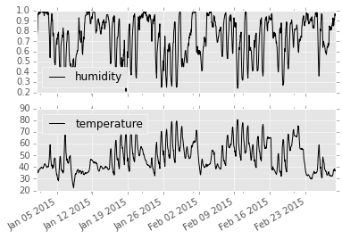

import datetime
import pandas as pd
import forecastio
import getpassIn this notebook, I’ll write a small illustration on downloading historical weather data using forceast.io. I’ll also illustrate handling timezone issues when using such time series data. I am going to use python-forecastio, which is a Python wrapper around forecast.io service. I’ll be downloading hourly weather data for Austin, Texas.
# Enter your API here
api_key = getpass.getpass()········len(api_key)32Austin’s Latitude and longitude
lat = 30.25
lng = -97.25Let us see the forecast for 1 Jan 2015
date = datetime.datetime(2015,1,1)forecast = forecastio.load_forecast(api_key, lat, lng, time=date, units="us")forecast<forecastio.models.Forecast at 0x10319ce50>hourly = forecast.hourly()hourly.data[<forecastio.models.ForecastioDataPoint at 0x1068643d0>,
<forecastio.models.ForecastioDataPoint at 0x106864bd0>,
<forecastio.models.ForecastioDataPoint at 0x106864ad0>,
<forecastio.models.ForecastioDataPoint at 0x106864cd0>,
<forecastio.models.ForecastioDataPoint at 0x106864fd0>,
<forecastio.models.ForecastioDataPoint at 0x106864d10>,
<forecastio.models.ForecastioDataPoint at 0x100734e10>,
<forecastio.models.ForecastioDataPoint at 0x1061e3450>,
<forecastio.models.ForecastioDataPoint at 0x1061e3350>,
<forecastio.models.ForecastioDataPoint at 0x1068b3250>,
<forecastio.models.ForecastioDataPoint at 0x1068b3110>,
<forecastio.models.ForecastioDataPoint at 0x1068b3150>,
<forecastio.models.ForecastioDataPoint at 0x1068b3190>,
<forecastio.models.ForecastioDataPoint at 0x1068b31d0>,
<forecastio.models.ForecastioDataPoint at 0x1068b3210>,
<forecastio.models.ForecastioDataPoint at 0x1068b3fd0>,
<forecastio.models.ForecastioDataPoint at 0x1068b3dd0>,
<forecastio.models.ForecastioDataPoint at 0x1068b3e10>,
<forecastio.models.ForecastioDataPoint at 0x1068b3e50>,
<forecastio.models.ForecastioDataPoint at 0x1068b3f50>,
<forecastio.models.ForecastioDataPoint at 0x1068c84d0>,
<forecastio.models.ForecastioDataPoint at 0x1068c8390>,
<forecastio.models.ForecastioDataPoint at 0x1068c8510>,
<forecastio.models.ForecastioDataPoint at 0x1068c8550>]Extracting data for a single hour.
hourly.data[0].d{u'apparentTemperature': 32.57,
u'dewPoint': 33.39,
u'humidity': 0.79,
u'icon': u'clear-night',
u'precipIntensity': 0,
u'precipProbability': 0,
u'pressure': 1032.61,
u'summary': u'Clear',
u'temperature': 39.46,
u'time': 1420005600,
u'visibility': 10,
u'windBearing': 21,
u'windSpeed': 10.95}Let us say that we want to use the temperature and humidity only.
attributes = ["temperature", "humidity"]times = []
data = {}
for attr in attributes:
data[attr] = []Now, let us download hourly data for 30 days staring January 1 this year.
start = datetime.datetime(2015, 1, 1)
for offset in range(1, 60):
forecast = forecastio.load_forecast(api_key, lat, lng, time=start+datetime.timedelta(offset), units="us")
h = forecast.hourly()
d = h.data
for p in d:
times.append(p.time)
for attr in attributes:
data[attr].append(p.d[attr])Now, let us create a Pandas data frame for this time series data.
df = pd.DataFrame(data, index=times)df.head()| humidity | temperature | |
|---|---|---|
| 2015-01-01 11:30:00 | 0.73 | 38.74 |
| 2015-01-01 12:30:00 | 0.74 | 38.56 |
| 2015-01-01 13:30:00 | 0.75 | 38.56 |
| 2015-01-01 14:30:00 | 0.79 | 37.97 |
| 2015-01-01 15:30:00 | 0.80 | 37.78 |
Now, we need to fix the timezone.
df = df.tz_localize("Asia/Kolkata").tz_convert("US/Central")df.head()| humidity | temperature | |
|---|---|---|
| 2015-01-01 00:00:00-06:00 | 0.73 | 38.74 |
| 2015-01-01 01:00:00-06:00 | 0.74 | 38.56 |
| 2015-01-01 02:00:00-06:00 | 0.75 | 38.56 |
| 2015-01-01 03:00:00-06:00 | 0.79 | 37.97 |
| 2015-01-01 04:00:00-06:00 | 0.80 | 37.78 |
I’ll now export this file to a CSV to use it for following demonstrations on aggregations on time series.
df.to_csv("weather.csv")A quick validation of our downloaded data.
%matplotlib inline
import matplotlib.pyplot as plt
plt.style.use('ggplot')df.plot(subplots=True);